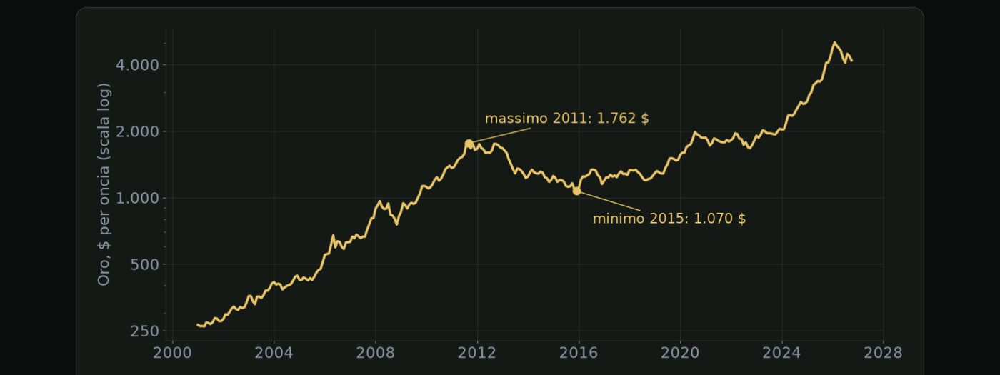
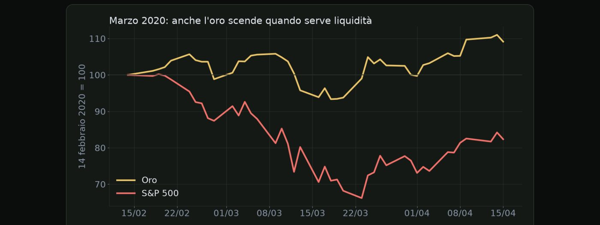

Materiale educativo, non consulenza finanziaria. Il trading con leva su forex, CFD e futures comporta un rischio elevato: puoi perdere tutto il capitale. Numeri, esempi e simulazioni non prevedono risultati futuri.
Le caratteristiche che trasformano un asset in un rifugio.
Apriamo il modulo sui beni rifugio. Quando scoppia una crisi, una guerra o un crollo di borsa, il denaro non sparisce, si sposta. E si sposta verso alcuni asset precisi, considerati più sicuri. In questa lezione vediamo quali caratteristiche rendono un bene un rifugio.
Un bene diventa un rifugio quando ha quattro caratteristiche. La liquidità. Deve essere possibile comprarlo e venderlo facilmente, anche in grandi quantità, senza far crollare il prezzo. Un valore percepito stabile, che non dipenda dal successo di una singola azienda o dalla salute di un governo fragile. Una storia, cioè la prova di aver mantenuto il valore durante crisi passate. E infine la fiducia, che è forse la caratteristica più importante. Un bene è un rifugio anche perché tutti si aspettano che gli altri lo comprino nei momenti di paura, e questa aspettativa diventa una profezia che si autoavvera.
| Rifugio | Perché |
|---|---|
| Oro | riserva di valore da millenni, nessun emittente |
| Titoli di Stato USA | il mercato più liquido del mondo |
| Dollaro | la valuta di riserva mondiale |
| Yen giapponese | grande creditore estero, rimpatrio dei capitali |
| Franco svizzero | stabilità politica e finanziaria |
Attenzione però, rifugio non significa privo di rischio. Il prezzo di un rifugio si muove, a volte molto. L'oro, per esempio, ha avuto periodi di forti cali, anche di diversi punti percentuali in pochi giorni. Non sempre funzionano. Nelle crisi di liquidità più acute si vende tutto, compresi i rifugi, come vedremo nell'ultima lezione del modulo. E quando la paura è già nota a tutti, il rifugio può essere già salito molto, e il rischio di una correzione aumenta.
Cosa muove l'oro: tassi, dollaro, banche centrali e paura.
L'oro è il bene rifugio per eccellenza, e anche uno degli strumenti più scambiati dai trader retail. In questa lezione mettiamo insieme tutto quello che abbiamo visto finora, e vediamo quali sono i principali motori del suo prezzo.
Il prezzo dell'oro dipende da quattro motori principali. I rendimenti reali, che abbiamo visto nel modulo sei. Quando sono alti, tenere oro costa di più in termini di interessi persi, e questo pesa sul prezzo. Il dollaro, che spesso si muove in direzione opposta, come abbiamo visto nel modulo sulle correlazioni. Le banche centrali, che negli ultimi anni hanno comprato grandi quantità di oro per diversificare le proprie riserve, e che sono diventate un sostegno importante per il prezzo. E la paura, legata a crisi finanziarie e tensioni geopolitiche, che spinge gli investitori a cercare protezione.

Ecco il prezzo dell'oro dal 2000, in scala logaritmica. Parte da circa duecentosessantacinque dollari, arriva quasi a milleottocento al massimo del 2011, in media mensile,, poi perde circa il quaranta per cento fino a dicembre 2015. Anche il rifugio per eccellenza può scendere per anni. Da lì riparte, e a ottobre 2026 è sopra i quattromila e cento dollari.
| Dato | Perché |
|---|---|
| Inflazione USA | cambia le attese sui tassi della Fed |
| Rapporto sul lavoro USA | idem, e muove il dollaro |
| Riunioni della Fed | il dot plot e la conferenza stampa |
| Rendimenti USA | il decennale e i rendimenti reali |
Infine, una parola sulla volatilità, che per chi fa trading sull'oro è fondamentale. Nei giorni dei dati americani importanti l'oro può muoversi di decine di dollari in pochi minuti, molto più di quanto si muova di solito in un'ora. Con prezzi alti, ogni dollaro di movimento pesa di più sul conto. Per questo il calcolo del lotto in base allo stop è ancora più importante che su altri strumenti. E lo spread si allarga molto intorno ai dati e alla riapertura dei mercati la domenica sera, quindi conviene evitare ordini molto stretti in quei momenti.
Perché franco svizzero e yen si rafforzano quando i mercati crollano.
Tra le valute, due hanno la fama di rifugio, il franco svizzero e lo yen giapponese. Quando i mercati hanno paura, tendono a rafforzarsi. In questa lezione vediamo perché, e quali rischi particolari comportano.
| Perché | stabilità politica e finanziaria |
| Debito | basso |
| Rischio | interventi della banca centrale |
| Perché | grande creditore estero |
| Meccanismo | rimpatrio dei capitali |
| Rischio | chiusura del carry trade |
Il franco svizzero è considerato un rifugio per la stabilità politica e finanziaria della Svizzera, per il suo debito pubblico basso e per una lunga tradizione di neutralità. Il rischio particolare, come vedremo, sono gli interventi della banca centrale svizzera, che non ama un franco troppo forte. Lo yen ha una storia diversa. Il Giappone è uno dei maggiori creditori del mondo, cioè ha investito enormi somme all'estero. Nei momenti di paura, parte di questi capitali torna in patria e viene convertita in yen. A questo si aggiunge la chiusura delle operazioni di carry trade, che abbiamo visto nel modulo due.
| Prima | molti investitori sono corti sullo yen per il carry trade |
| Arriva lo shock | le borse scendono in modo violento |
| Chiusura delle posizioni | tutti ricomprano yen nello stesso momento |
| Effetto | lo yen si rafforza di diversi punti in pochi giorni |
Cosa significa per chi fa trading su queste valute? Che nelle fasi di paura i cambi con yen e franco possono accelerare all'improvviso. Che le autorità possono intervenire per frenare un rafforzamento eccessivo, provocando movimenti nella direzione opposta. E che queste valute hanno quello che si chiama rischio di coda, cioè eventi rari ma molto ampi. Per gestirlo servono lotti piccoli, perché in quei momenti lo stop può essere eseguito molto lontano.
Perché nelle crisi il mondo compra dollari e titoli americani.
Nelle crisi più gravi, anche quando il problema nasce proprio negli Stati Uniti, il denaro tende a dirigersi verso i titoli di Stato americani e il dollaro. In questa lezione vediamo perché, e cosa comporta per chi fa trading.
I titoli di Stato americani sono il rifugio più usato dai grandi investitori, per tre motivi. Sono il mercato obbligazionario più liquido del mondo, in cui ogni giorno si scambiano enormi quantità senza difficoltà. Sono usati come garanzia in tutto il sistema finanziario, per esempio nei prestiti tra banche, e questo li rende indispensabili. Quando arriva una crisi, la forte domanda fa salire i loro prezzi, e quindi scendere i rendimenti. Per questo un calo rapido dei rendimenti americani è spesso un segnale di paura sui mercati.
Anche il dollaro si comporta da rifugio, per ragioni in parte diverse. È la principale valuta di riserva, e la maggior parte delle riserve delle banche centrali di tutto il mondo è detenuta in dollari. Molte imprese e governi fuori dagli Stati Uniti hanno debiti in dollari, e devono quindi procurarseli per pagarli. Nelle crisi tutti hanno bisogno di dollari nello stesso momento, e questa corsa al dollaro lo fa rafforzare, anche contro altri rifugi.
| Economia USA forte | dollaro forte per crescita e tassi |
| Crescita globale ordinata | dollaro spesso più debole |
| Crisi globale | dollaro forte come rifugio |
| Lettura | il dollaro può salire sia con buone sia con cattive notizie |
Marzo 2020: la crisi di liquidità in cui anche l'oro è sceso.
Chiudiamo il modulo sui beni rifugio con un caso che ogni trader dovrebbe conoscere. Ci sono momenti in cui la paura è così forte che non si cerca più un rifugio, si cerca solo liquidità. In quei momenti si vende tutto, compresi i rifugi. Il caso più recente e chiaro è il marzo del 2020.
| Periodo | Cosa è successo |
|---|---|
| Fine febbraio | la pandemia si diffonde, le borse iniziano a crollare |
| Inizio marzo | l'oro sale, come ci si aspetta da un rifugio |
| Metà marzo | corsa alla liquidità: scendono anche oro e titoli di Stato |
| 23 marzo | la Fed annuncia acquisti senza limiti, i mercati iniziano a calmarsi |

Ecco cosa è successo davvero tra febbraio e aprile 2020. In rosso l'S&P 500, che dal quattordici febbraio al ventitré marzo perde circa il trentaquattro per cento. In giallo l'oro: all'inizio regge, ma dal nove al diciotto marzo scende anche lui di quasi il dodici per cento, perché chi doveva coprire le perdite vendeva tutto quello che poteva. Solo dopo riparte. Nel panico, anche i rifugi possono scendere.
Perché succede una cosa del genere? Perché chi ha posizioni con leva e subisce forti perdite riceve richieste di margine, cioè deve versare denaro immediatamente. Per procurarsi quel denaro vende ciò che è più facile da vendere, e i rifugi, essendo molto liquidi, sono i primi della lista. Quando tutti lo fanno nello stesso momento, le correlazioni tendono a uno, cioè quasi tutto scende insieme, e la diversificazione smette temporaneamente di funzionare.
Quali lezioni ne traiamo? Nessun asset ti protegge in modo automatico. Un rifugio può scendere proprio nel momento in cui pensavi che ti proteggesse. Avere margine libero sul conto e usare una leva bassa evita di essere costretti a chiudere posizioni nel momento peggiore, come è successo a tanti in quei giorni. E la difesa principale resta lo stop, insieme a una dimensione corretta della posizione. Le correlazioni possono tradire, una regola scritta no.
Spunta ogni punto solo se sapresti spiegarlo a voce a un altro trader.
Materiale educativo, non consulenza finanziaria. Il trading con leva su forex, CFD e futures comporta un rischio elevato: puoi perdere tutto il capitale. Numeri, esempi e simulazioni non prevedono risultati futuri. · riskly.trade